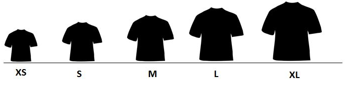
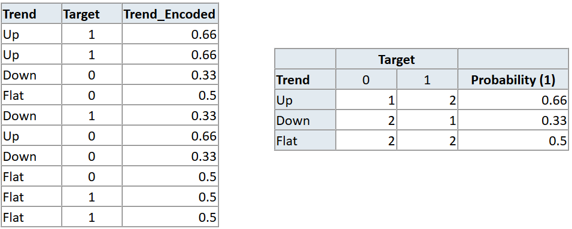
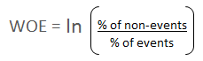

Nominal
Ordinal
Use Category Encoders to improve model performance when you have nominal or ordinal data that may provide value.
Binary Encoder
Helmert Encoding
The mean of the dependent variable for a level is compared to the mean of the dependent variable over all previous levels.
Sum Encoding
Compares the mean of the dependent variable for a given level to the overall mean of the dependent variable over all the levels.
Backward Difference
The mean of the dependent variable for a level is compared with the mean of the dependent variable for the prior level
Polynomial
Orthogonal polynomial contrasts. The coefficients taken on by polynomial coding for k=4 levels are the linear, quadratic, and cubic trends in the categorical variable.
Target Encoding
Leave One Out Encoding
$$s = (s.sum() - s)/(len(s) - 1)$$
WOE = In(% of non-events ➗ % of events)
Steps of Calculating WOE
Information Value (IV)
OneHot, Hashing, LeaveOneOut, and Target encoding.Avoid OneHot for high cardinality columns and decision tree-based algorithms.
Ordinal (Integer), Binary, OneHot, LeaveOneOut, and Target
Target and LeaveOneOut probably won’t work well